Linux（二）——常用命令
目录管理
切换路径
1 | cd |
- 绝对路径
路径全称，以/开头
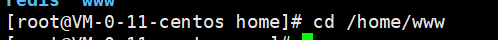
相对路径
当前目录：
./返回上一级目录：
cd ..
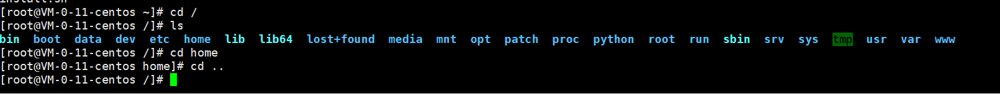
列出目录
1 | ls |
-a参数：all 查看所有文件（包括隐藏文件）
-l参数：所有文件信息（属性）
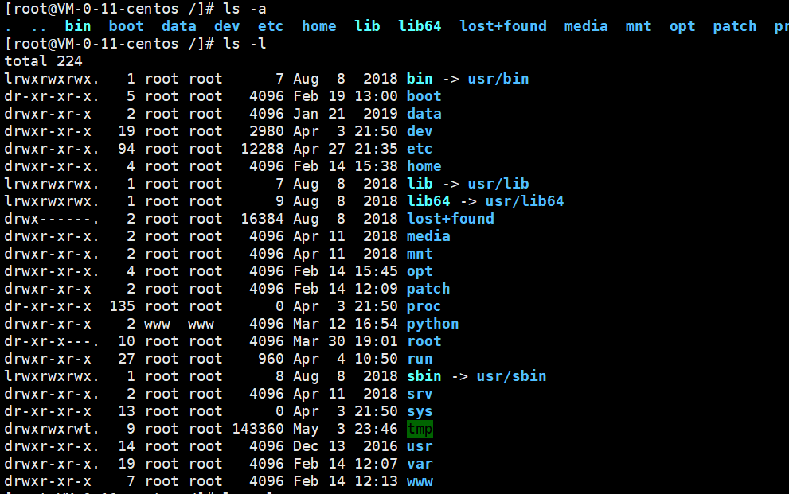
命令可以组合使用
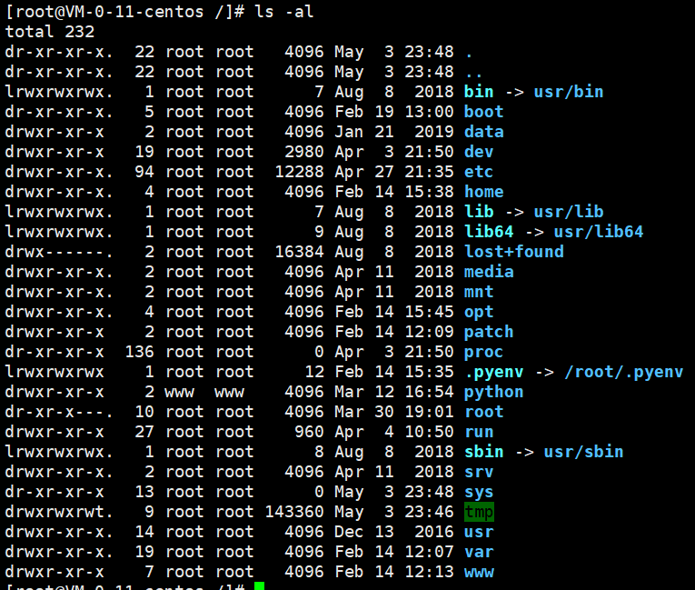
显示用户所在目录
1 | pwd |
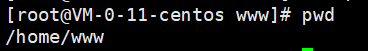
创建目录
1 | mkdir |
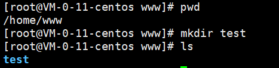
-p参数：递归创建
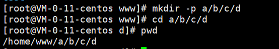
删除目录
1 | rmdir |
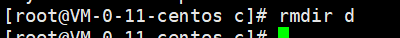
当目录不为空时，无法直接删除
- -p参数：递归删除
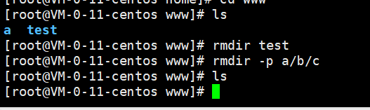
复制文件/目录
1 | cp 原来的地方 新的地方 |
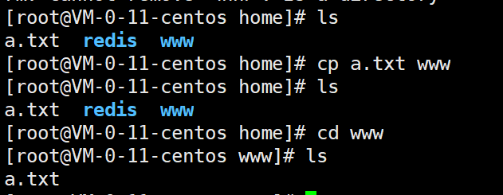
移除文件或目录
1 | rm 移除文件或目录 |
-f参数：忽略不存在的文件，不会出现警告，强制删除
-r参数：递归删除目录
-i互动，删除询问是否删除
以下命令极其危险，不得尝试！
1
rm -rf / #删除系统中所有文件
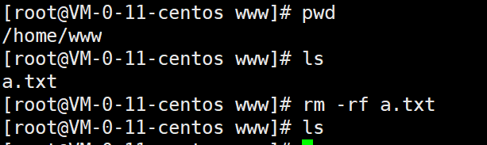
移动文件或目录
1 | mv 移动文件或目录|重命名 |
移动文件
- -f参数：强制
- -u参数：只替换
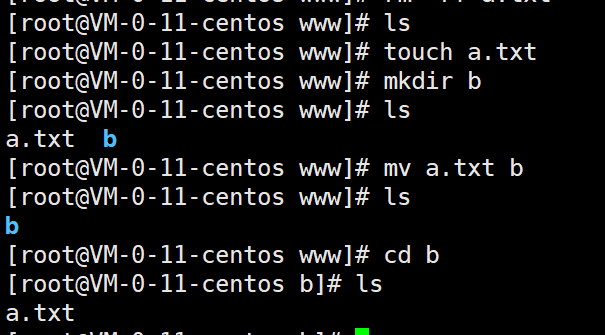
重命名操作
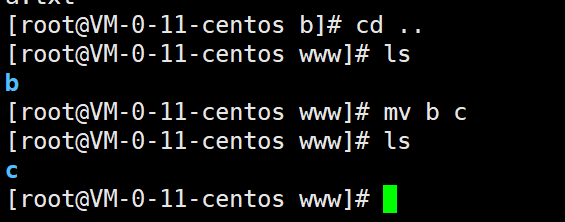
文件
1 | ls -ll |
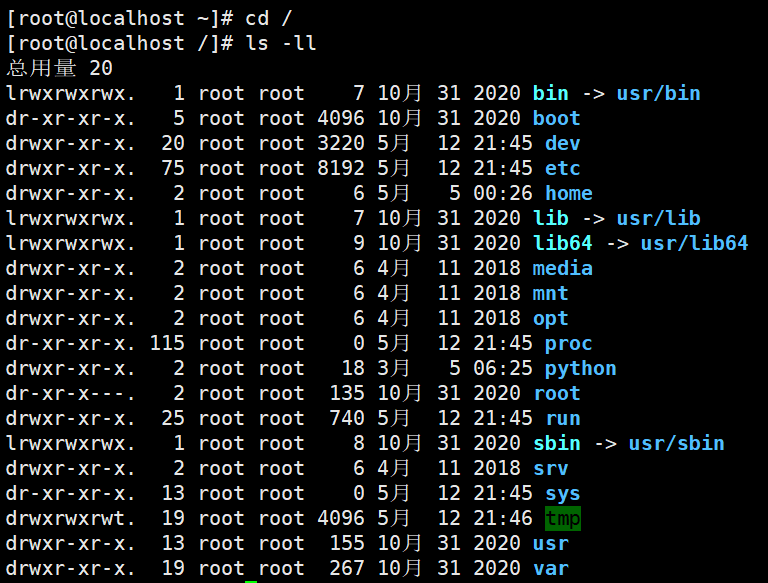
在Linux中第一个字符代表这个文件是目录、文件或链接文件等等：
- 当为[ d ]则是目录
- 当为[ - ]则是文件；
- 若是[ l ]则表示为链接文档 ( link file )；
- 若是[ b ]则表示为装置文件里面的可供储存的接口设备 ( 可随机存取装置 )；
- 若是[ c ]则表示为装置文件里面的串行端口设备，例如键盘、鼠标 ( 一次性读取装置 )。
接下来的字符中，以三个为一组，且均为『rwx』 的三个参数的组合。
其中，[ r ]代表可读(read)、[ w ]代表可写(write)、[ x ]代表可执行(execute)。
要注意的是，这三个权限的位置不会改变，如果没有权限，就会出现减号[ - ]而已。
每个文件的属性由左边第一部分的10个字符来确定（如下图）：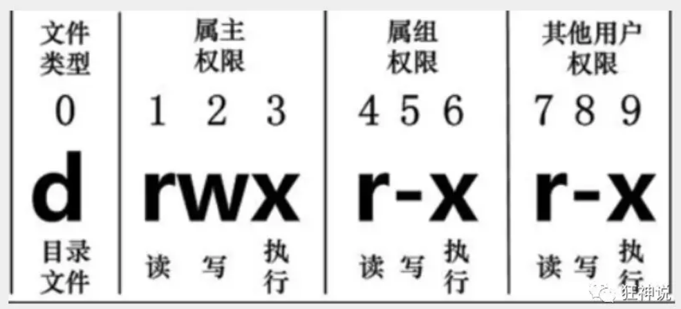
本博客所有文章除特别声明外，均采用 CC BY-NC-SA 4.0 许可协议。转载请注明来自 HUII's Blog！

评论